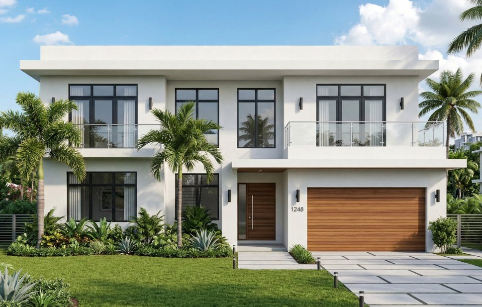

Ocala is Florida's hidden gem — rolling hills, horse country, natural springs, and the most affordable land in the state. Build bigger, build better, and keep thousands in your pocket. BuilderK handles financing, design, permits, and construction so you can focus on living the good life.
Start Your Ocala Project →
Forget the overpriced coast. Ocala gives you more land, more home, and more value per dollar than anywhere else in Florida — and it's one of the fastest-growing mid-size cities in the country.
Horse country, natural springs, rolling hills — Ocala looks nothing like the rest of flat Florida. Affordable land prices and a booming population make it one of the fastest-growing mid-size cities in the state.
Ocala offers the lowest entry price for custom home building in Florida. Large lots sell for a fraction of coastal prices, and new construction delivers some of the highest cash-on-cash returns in the state for 2026.
Marion County is known for spacious 1 to 5+ acre parcels. Use your land equity as a down payment — potentially 0% cash out of pocket — with room left over for a pool, barn, or workshop.
No juggling between architects, lenders, and contractors. BuilderK is your single point of contact from empty lot to move-in day.
Pick from dozens of pre-designed plans or bring your own. We tailor every detail — layout, elevations, and finishes — to fit your Marion County lot and the way you want to live.
Explore Plans →We pair you with lenders who specialize in one-time close construction loans. One application, one closing, one monthly payment. Lower Ocala land costs often mean a smaller total loan and easier approval.
Learn About Financing →Marion County permitting is generally faster and less complex than coastal jurisdictions. We handle building permits, site plans, well permits, septic design, and every inspection from start to finish.
Licensed General Contractor (CGC 1537163) managing your entire build — subcontractors, schedules, quality control, and budget. One point of contact from foundation to final walkthrough.
Choose your flooring, cabinets, countertops, bathroom fixtures, lighting, and paint. We walk you through every option to match your style and budget — your dollar stretches further in Ocala.
View Options →Many Marion County lots sit outside city utilities. We coordinate private well drilling, septic system design and permitting, plus all standard construction — so rural lots are no obstacle.
We build custom homes across Marion County — from established communities to wide-open acreage. If you have a lot, we can build on it.
From your first phone call to the day you get the keys — here's the step-by-step roadmap.
Tell us about your Marion County lot, your dream home, and your budget. No plans yet? No problem — we guide you from the very first conversation.
Select a floor plan or customize your own. We connect you with a lender for a one-time close construction loan — Ocala's lower land costs often mean a smaller total loan.
We pull Marion County permits — generally faster than coastal counties — coordinate well and septic if needed, and manage every phase of construction with real-time updates.
Walk through your brand-new custom-built Ocala home. On time, on budget, built exactly how you designed it. Your construction loan converts to a permanent mortgage automatically.
Your dollar goes further in Ocala. Same quality construction, more home for your money. No hidden fees.
Everything you need to know before building in Marion County.
Let's talk about your lot, your vision, and your budget. Free consultation, no commitment — just a conversation about getting more home for your money.
Get Your Free Ocala Consultation →